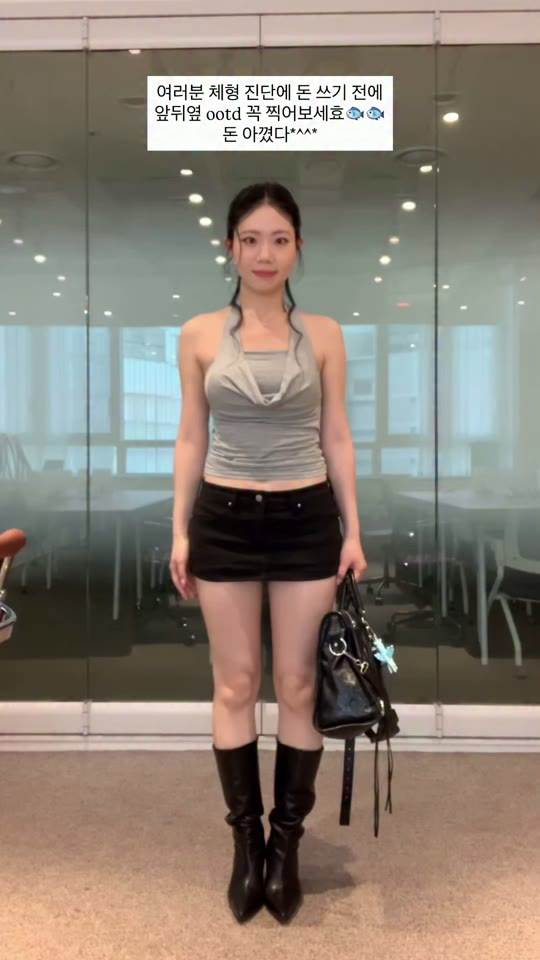
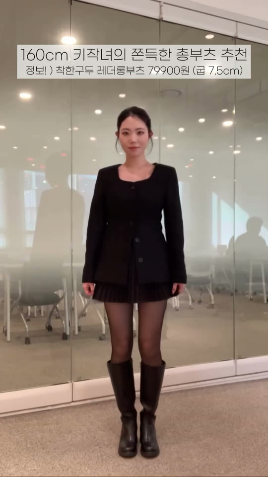
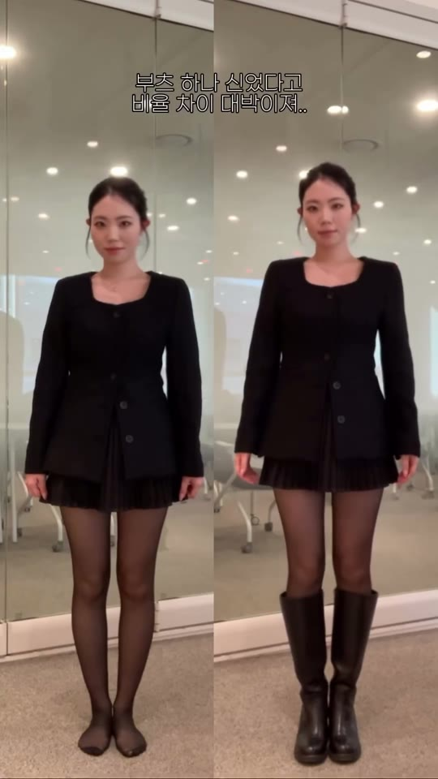

모래님 키높이 부츠 촬영 가이드
초안 정말 감사합니다! 흐름은 그대로 좋아요. 이번에는 카메라를 조금 더 가까이 두고, 부츠가 화면에 더 크게 보이도록 다시 한 번 부탁드려요. 아래 5장면, 20초 안팎이면 돼요.
제품카민스 블랙으로 진행해요
더 가까이, 그리고 밝은 옷에 맨다리


1더 가까이. 초안은 몸 전체가 작게 나와서 부츠가 잘 안 보여요. 카메라를 가까이 두고 얼굴 아래 혹은 복부 아래부터 부츠 끝까지 화면을 꽉 채워 주세요.
2부츠와 대비되게. 상의·하의는 밝은 색으로, 검은 스타킹 대신 맨다리(또는 흰 양말)로 찍어 주세요. 짧은 하의는 꼭 입어 주세요.
장소·도는 순서·말투는 모래님 체형 영상 그대로 좋아요.
앞모습, 허리 아래만 가까이
체형 영상과 같은 자리에서, 앞모습으로 시작해 주세요. 카메라는 허리 아래만 나오게 가까이. 얼굴이 나오면 화면이 작아져서 키 차이가 안 보여요.
구도부츠가 화면 아래쪽에 크게, 발끝이 잘리지 않게 담아 주세요.
제자리에서 한 바퀴 · 앞 → 옆 → 뒤 → 옆 → 앞
체형 영상처럼 천천히 한 바퀴 돌아 주세요. 다만 카메라는 얼굴 아래 혹은 복부 아래부터 부츠 끝까지 화면 가득.
구도카메라는 고정, 폰을 허리 높이쯤 낮춰 두면 부츠가 더 커 보여요.
옷밝은 색 옷 + 맨다리(또는 흰 양말)로 검은 부츠가 또렷하게 보이게.
돌 때 가방이 부츠 앞을 가리지 않게, 가방은 빼고 찍어 주시면 더 좋아요.
단면 샘플 · 겉굽 3.5 + 속굽 4
초안의 단면 장면, 정말 잘 보여요! 이 부분은 그대로 써 주세요.
구도단면이 화면 가운데에 크게, 손으로 겉굽과 속굽 위치를 짚어 주세요.
본품은 자르거나 안창을 빼지 마세요.
한쪽만 부츠 신고 · 나란히 가까이

화면을 둘로 나누지 말고, 한 화면에서 한쪽만 부츠를 신고 나란히 서 주세요.
구도폰을 바닥 가까이 낮게 두고 무릎 아래만. 두 발 높이 차이가 한눈에 보이게 2~3초 멈춰 주세요.
앞모습으로 마무리
체형 영상 끝처럼 앞모습으로 2~3초. 이때도 얼굴 아래 혹은 복부 아래부터 부츠 끝까지 가까이 담아 주세요.
자막초안의 마무리 멘트 그대로 좋아요. 제품명은 ‘착한구두 가죽부츠’로 적어 주세요.
소리나레이션을 넣으신다면 음악보다 목소리가 잘 들리게 해 주세요.
신발만 보이는 정지 컷 · 2~3초
광고로 썼을 때 반응이 가장 좋았던 구도예요. 영상 중간이나 끝에 2~3초만 넣어 주시거나, 자막·음악 없는 원본으로 따로 보내 주세요.
이것만 빼 주세요
멀리서 전신만 찍기 — 부츠가 작아져요. 꼭 가까이 찍어 주세요.
검은 스타킹 · 위아래 모두 검은 옷 — 검은 부츠가 묻혀요.
부츠 가리기 — 가방·손·글자가 부츠 앞을 가리지 않게 해 주세요.
다른 신발 브랜드 이름·로고·상자, 저작권 음원은 넣지 않아요.
보내기 전, 이것만 확인해 주세요
단면 샘플은 촬영이 끝나면 착불로 “서울 마포구 양화로 125 5층 착한구두 / 받는 분 콘텐츠기획 / 010-5595-5342”로 보내 주세요. 궁금한 점은 이 가이드를 받은 대화방으로 편하게 연락 주세요.